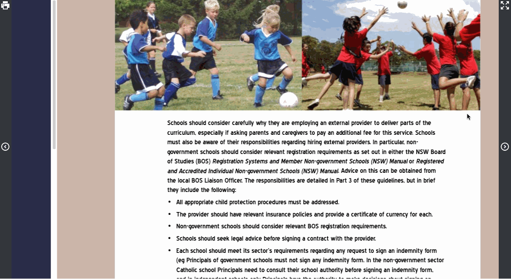
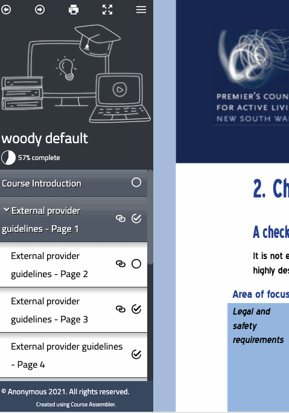
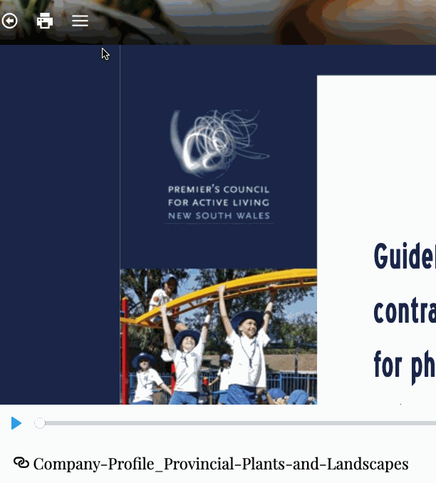

Anyway, here's a quick sample of the previewer showing a few themes.

A major problem with the old theme system was customisability. To add navigtion icons or a print button was a major issue as each theme was its own separate set of code. We even had a GitHub repo where you could submit your own custom designs - but nobody did. Why not? Probably because theming is actually hard and some features are inticately tied to the core code rather than a flat web page. Also each theme had its own css, its own code, its own html. To make multiple variations of the same theme (e.g. a simple colour change), you end up having separate copies of the code over and over, and this can lead to bugs and inconsistencies across themes. We needed a better system.
So we now have a built in concepts of themes and presets.
Themes define the broad navigation style and functionality (the code that runs a course). You can select a theme, but you can't edit the code inside it (yet).
Presets define the colours and shapes and positions of things. Presets are similar to CSS (Cascading Style Sheets - the language browsers use for web page colours and so on). So presets share some of the same language features, but are easier to write. You don't have to know anything about how code works or what the HTML is. Presets are plain text.
It is now much easier to customise the designs. The existing styles are still there, with some new features thrown in:

With all this ability to customise you can go off-the-rails pretty easily. Which is to say, there is no reason you couldn't do this:

Maybe don't do that, though. (p.s. it's the CaffeLatte theme, in case you were wondering how it was done)
To find out more about customising presets, see the documentation.